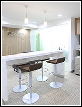
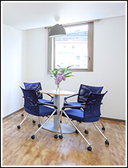
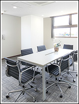
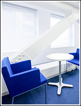
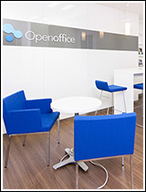
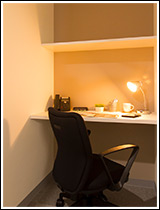
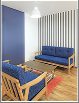
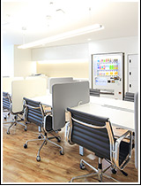
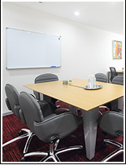

起業時の【軍資金】がいかに大切か｜個室のレンタルオフィスならOpenoffice：東京・大阪をはじめ全国に50拠点以上
- 【個室レンタルオフィス】オープンオフィス HOME
- オープンオフィスとは？
- 起業時の【軍資金】がいかに大切か
オープンオフィスとは？
- ■成功する起業家の条件：創業資金の有効活用
- ■起業時の【軍資金】がいかに大切か
- ■オープンオフィスの『保証金制度』
- ■オープンオフィスの『無人運営』とは？
- ■一坪オフィス実験
- ■立地・デザインについて
- ■共益費って？
- ■何も買う必要がない！
- ■オープンオフィスで過ごす「あなたの一日」
起業時の【軍資金】がいかに大切か
「ムダ使い」をしないという事も大変重要です。
しかし、それよりももっと大切なのは、「有効に使う」ということです。
いくらお金を使わなくても、それで売上が上がっていくわけではありません。
支出をいくら減らしても、収入が無ければ、事業は成り立たないのです。
売上を上げて収入を安定させるためには、
お客様から信用されないといけません。
一等地にオフィスを構えることは信頼への近道ともいえます。
一等地にオフィスがあるというのは、お客様へ信頼感を与えます。
一等地にオフィスを構えるのは、「売上を上げるため」の手段の一つとも言えるのです。
実際、一等地というのはビルオーナーの入居審査も厳しいですし、儲かってないと一等地にオフィスなんて構えることができないのです。
そうです、一等地にオフィスを構えるにはそれなりのお金、起業家やベンチャーにとっては莫大なお金がかかるのです。
だから、一等地にオフィスを構えることで、お客様の信頼を勝ち得ることが出来るのです。
成功する会社というのは、それを知っているのです。
だから、成功していく会社というのは、どんどん良い場所にオフィスをグレードアップしていくわけですね。
実際に一等地のオフィスを普通に借りる場合はいくらかかるのでしょうか？
一等地のオフィスであれば、利用料の12カ月分の「敷金」を要求されます。
つまり、1坪3万円の家賃で10坪のオフィスを借りたら、家賃は30万円ですから、なんと「360万」も支払わなければなりません。
資本金が300万円の会社ならば、これで【ジ・エンド】です。
オフィスを借りたら、資金はゼロになってしますのです。
さらに、「礼金」を「数か月分」取られるケースもありますし、「仲介手数料」は利用料の1ヶ月分を仲介業者に取られます。
ワンルームマンションで我慢するにしても程度の差はありますが、軍資金が無くなるのは変わりません。
しかも、ワンルームマンションは、仕事用ではないですから、改修に、またお金がかかるのです。
敷金は2ヶ月分とか20％分は「償却」されるので戻ってきませんし（契約の時によく見てくださいね）、「原状回復費」もバカにならないですから、4か月分は戻ってこないでしょう。
実際、税務的にもビルオーナーはこの「償却分」は「保証金を預かった時点」で「売上」にしなければならないという国税の通達があります。
またこの3分の1の費用（戻ってこないので費用です）は経費には出来ません。
オフィスをたたむまで「経費化」することさえ出来ないのです。お金だけが出て行きます。これも国税の通達にあります。
だから「オープンオフィス」は、初期費用をできるだけ低く抑えています。
一等地にオフィスを構えることによる大きなメリットを、最小の費用で得られるのです。
つまり、とても効果的に、「売上を上げて早期に事業を安定化させる」ことに軍資金を使うことが出来るようにしています。
このようなサービスを提供するために、 オープンオフィスでは保証金制度を採用しています。








